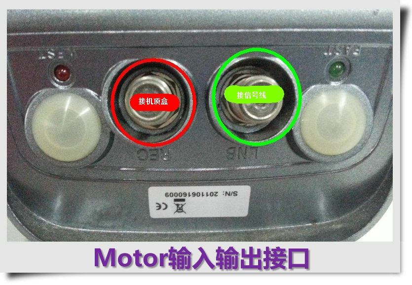

0.数字音频测试的器材
Motor，其实就是一个马达，它主要的功能是，将我们的卫星天线（Satellite Antenna，俗称“锅盖”）固定在Motor上， 再把Motor固定在原来放“锅盖”的地方，然后通过机顶盒远程控制它转动； 通过转动，我们可以将“锅盖”对准不同的卫星，就省去了用户手动去挪动“锅盖”的麻烦（锅盖往往放置在屋顶上）。
另外，因为可以转动“锅盖”，就不需要在屋顶上放多个“锅盖”来对准不同的卫星了； 不过，Motor转动速度不快，所以当我们从一个卫星的频道切换到另一个卫星频道后，需要等待比较长的时间 （相对于我们使用多个“锅盖”，用DisEqc或22K开关来控制）。
Motor不需要装电池，因为卫星机顶盒本身就会供电（18~19V）。 Motor本身的功能就是接受命令转动，而转动到什么位置、怎么转动（转n秒/转n步/持续转）等都依赖于机顶盒的功能。 为了保证机顶盒能正确控制Motor，我们需要进行Motor的测试。
1.Motor连接机顶盒的方式
Motor有两个接口，一个是REC，一个是LNB。REC接机顶盒，LNB接信号线（最终连接到卫星天线上的高频头）。
2.Motor测试说明
我们测试Motor，主要是测试能否正常设置Motor的配置、是否能按照设置的方式运作。
在卫星编辑菜单，按黄色键，可以进入Motor编辑菜单（注意：卫星的Lnb Power 必须为ON，否则测试不了）
Motor Type 有三种类型：OFF 、DisEqc 1.2、USALS
主要测试Motor的是在DisEqc 1.2 类型下测试
OFF
DisEqc 1.2
USALS
每项测试最好记录设定位置的标度，作为测试的判断

3.Motor的基本操作
3.0 控制旋转方向——Move Steps（East、Stop、West）
这里可以触发Motor向东、向西转动。
测试时，选中Move Steps选项后，按左右键，可以让Motor往不同方向（East/West）转动；转动过程中按相反方向键，可停止转动（Stop）
East
Stop

West
3.1 控制旋转步长——Step Size
选中Step Size，可以选择Motor的转动方式，包括Continue（连续转动）、Step 1、Step 4、Step 8、Step 16、Step 32、1s、2s、3s、4s。测试时，需要East和West都测试，即向东连续转动、转动1步、4步、8步、16步……以及向西连续转动、转动1步、4步、8步、16步……都要测试一遍。
3.2 设置最大旋转角度——East Limit和West Limit
顾名思义，East Limit就是向东转能到达的最大位置、West Limit就是向西转能到达的最大位置；这么做是为了限制Motor转动范围。
设置时，让Motor转动，到达你想要定位最大位置的时候，将DisEqc Command切换到“East Limit”或“West Limit”,后按遥控器“OK”即可保存。测试时，请记录该点刻度。
设置West Limit
是否设置
此处为West Limit
检查你的设置是否起作用：当你设置了East Limit点，当让Motor向东转动到该点，就会停止向East继续转动，表示“East Limit”设置成功；当你设置了West Limit点，当让Motor向西转动到该点，就会停止向West继续转动，表示“West Limit”设置成功。
注意：当你连接了卫星进行测试时，在转到Limit的位置之前如果锁频成功，Motor将不会再转动。
3.3 取消最大旋转角度
能设置Motor自然要能取消。当Motor转动到East或West Limit点时，将DisEqc Command切换到“Disable Limit”后，按“OK”键保存。此时继续向East或West转动，如果能够继续转动，则Limit被取消。
切换到“Disable Limit”
取消Limit
3.4 转回参考位置
这个功能是将Motor转回参考位置（即“0”刻度处）。
在Motor编辑页面，将DisEqc Command切换到“Goto Ref”，后“OK”保存。观察Motor会不会自动转动到Motor标度“0”的位置。
切换到“Goto Ref”

确认
Motor转回0刻度处
4.设置卫星位置
4.0 设置两个卫星的位置
给不同卫星，设置了不同的位置，在观看节目时切到不同卫星的频道后，Motor会自动转到这颗卫星所设置的位置上。
两个卫星：a.138°卫星 频点：12538 H 41250
b.3S 卫星 频点：4000 H 26850
设置卫星1：在138°卫星的Motor编辑页面，将卫星的Position切换到“Position：1”，把DisEqc Command切换到“Save Position”，后“OK”保存。
注意：记录这颗卫星的位置（记录Motor上的刻度值）
设置卫星2：在3S卫星的Motor编辑页面，将卫星的Position切换到“Position：2”，把DisEqc Command切换到“Save Position”，后“OK”保存。
注意：记录这颗卫星的位置（记录Motor上的刻度值）
测试：分别对两个卫星进行搜台。搜台结束后，通过切换不同卫星节目，观察Motor会否转到相应卫星设置的位置。
（举个例子：假设卫星1搜索到了SAT1频道，卫星2搜索到了SAT2频道；先观看SAT1，切台到SAT2，Motor应该转动到卫星2设置的位置上去）
4.1 (Re-)Calculate功能的测试
（Re-）Calculate从字面上看的意思是“重新计算”，意为如果所有的卫星都发生了偏移，那么只需要改变其中一颗卫星的位置，然后使用（Re-）Calculate功能就可以将其他卫星的位置信息都设置相同的偏移量。
测试时，对某一卫星的位置进行修改后，保存，并记录与原来位置的偏移标度。将DisEqc Command切换到“(Re-)Calculate”，按OK键保存；观察其他卫星是否位置也同样发生偏移相同标度。
4.2 取消卫星位置
参考取消Limit：3.3 取消最大旋转角度
选择“Disabled Position”后按OK即可
5.版本信息
| # | 发布日期 | 版本 | 更新内容 | 作者 | 审核 |
| 1 | 2014年06月27日 | V1.0 | 创建文档 | 莫敦悦、林晓州 | —— |
| 2 | 2014年07月07日 | V1.1 | 修改Motor连接图；调整图片大小以适应PDF输出排版 | 林晓州 | 郑嘉惠、周厚秋、周宇锋 |
| 3 | 2015年11月24日 | V2.0 | 转入网站管理 | 林晓州 | —— |
OneLib智库 · 分享知识和经验，打造精品个人智库平台
Designed By 林晓州
qq： 1139904786
邮箱： 1139904786@qq.com
网址： http://www.onelib.biz
©2015 · OneLib智库